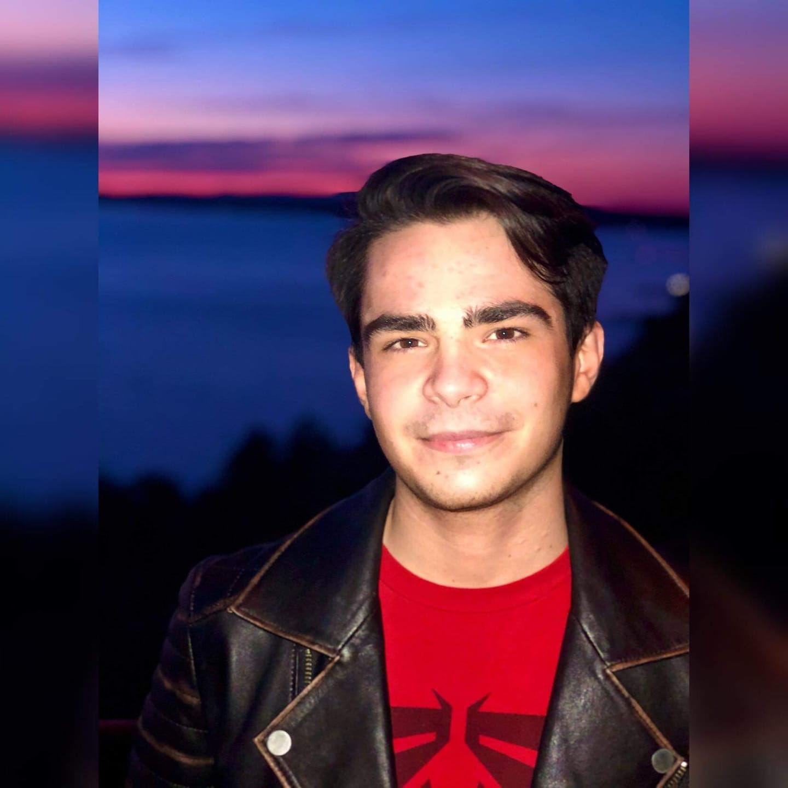
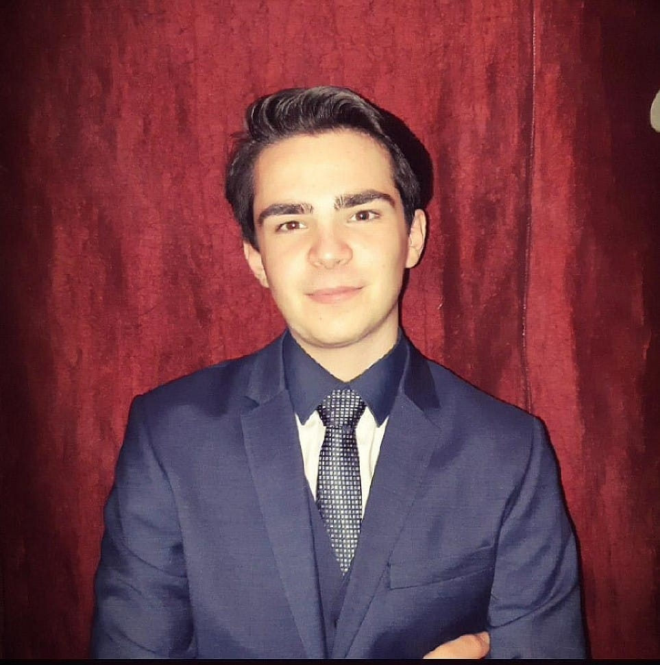

Szasztok! Szűcs Koppány vagyok, a Budapesti Műszaki- és Gazdaságtudományi Egyetem Energetikai Mérnök alapszakos hallgatója. 18 éves vagyok és egy Mezőszilas nevű kisfaluban élek. Hobbijaim közé tartozik a sakk és a Rubik kocka, továbbá érdekel még a quantum fizika és a számítógépes technológia. Szabadidőmben sorozatokat és filmeket nézek, könyveket olvasok vagy éppen a barátaimmal játszok online.
 